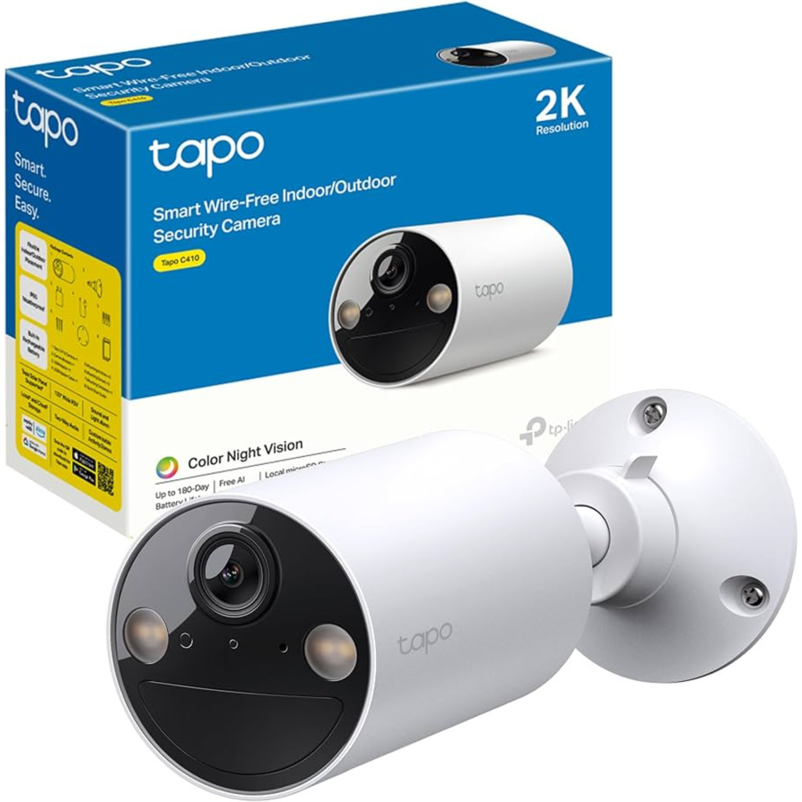
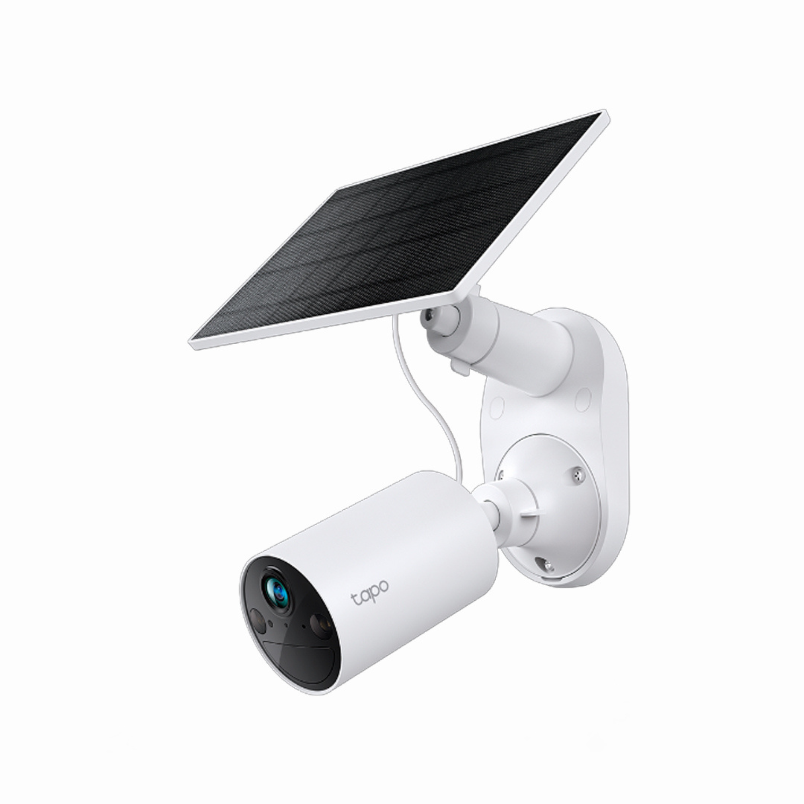
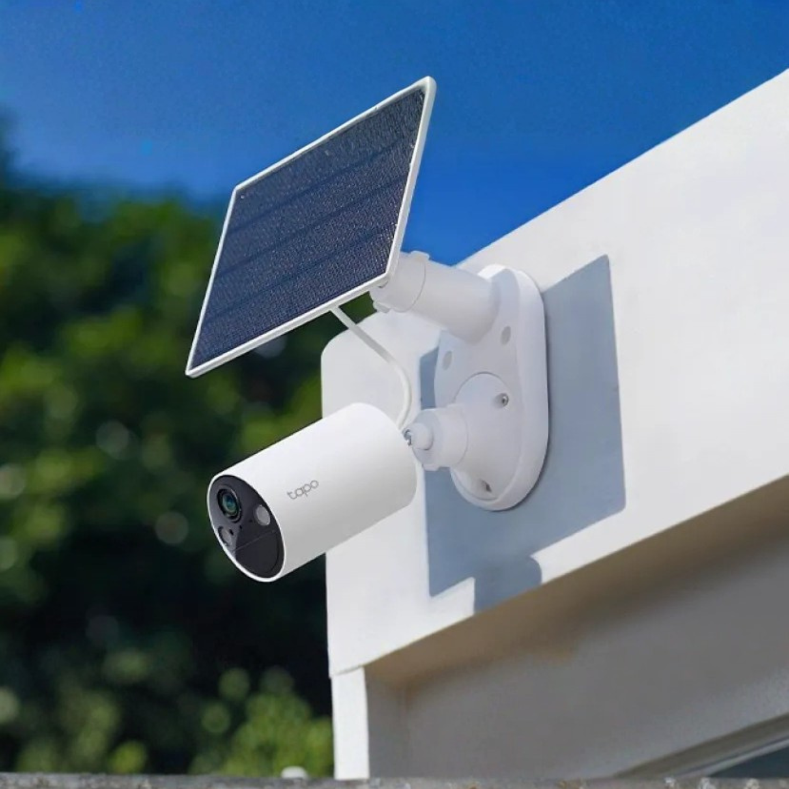
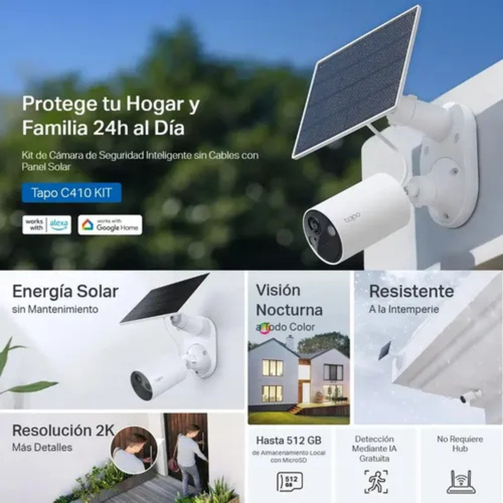
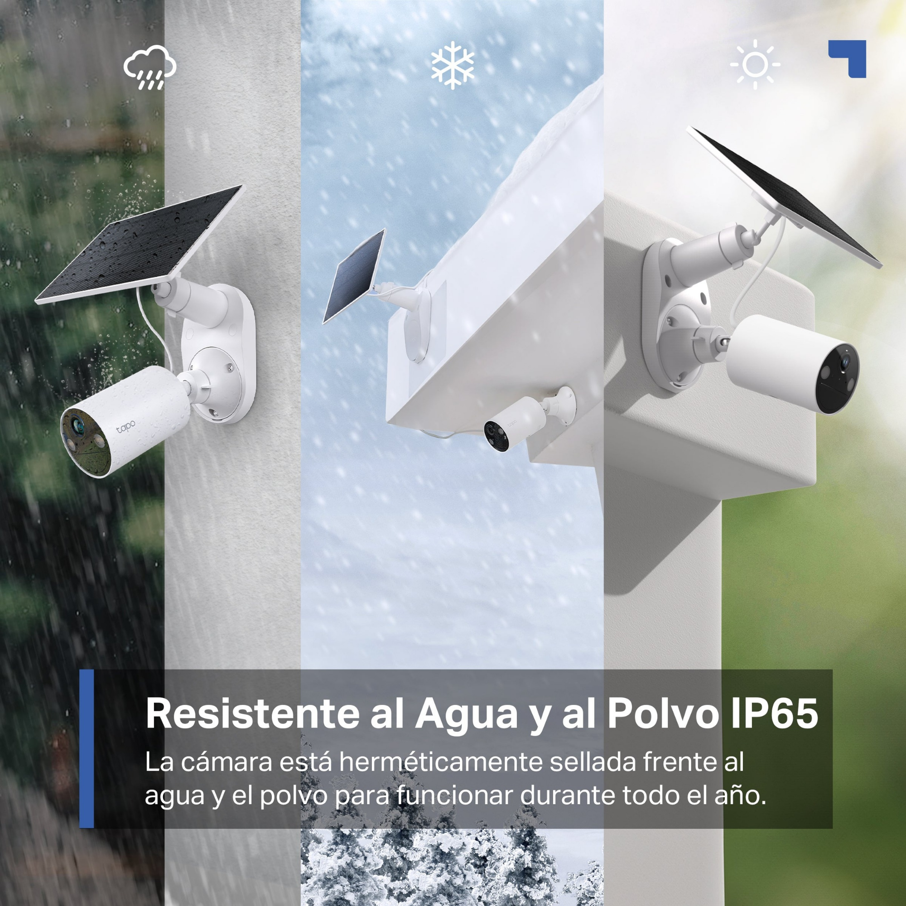
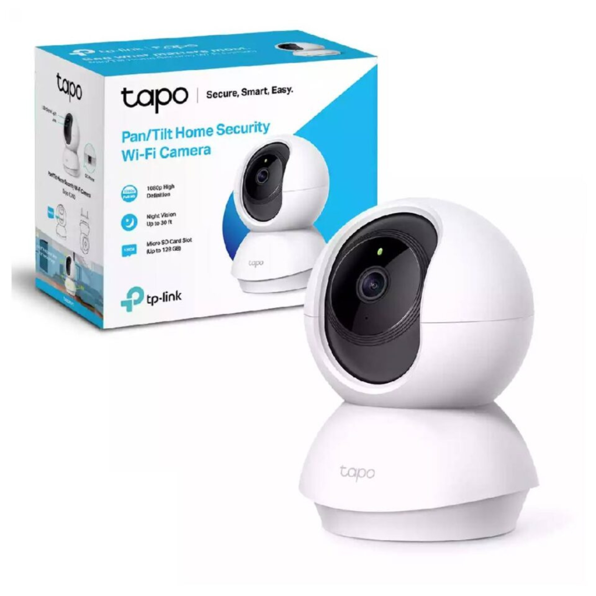
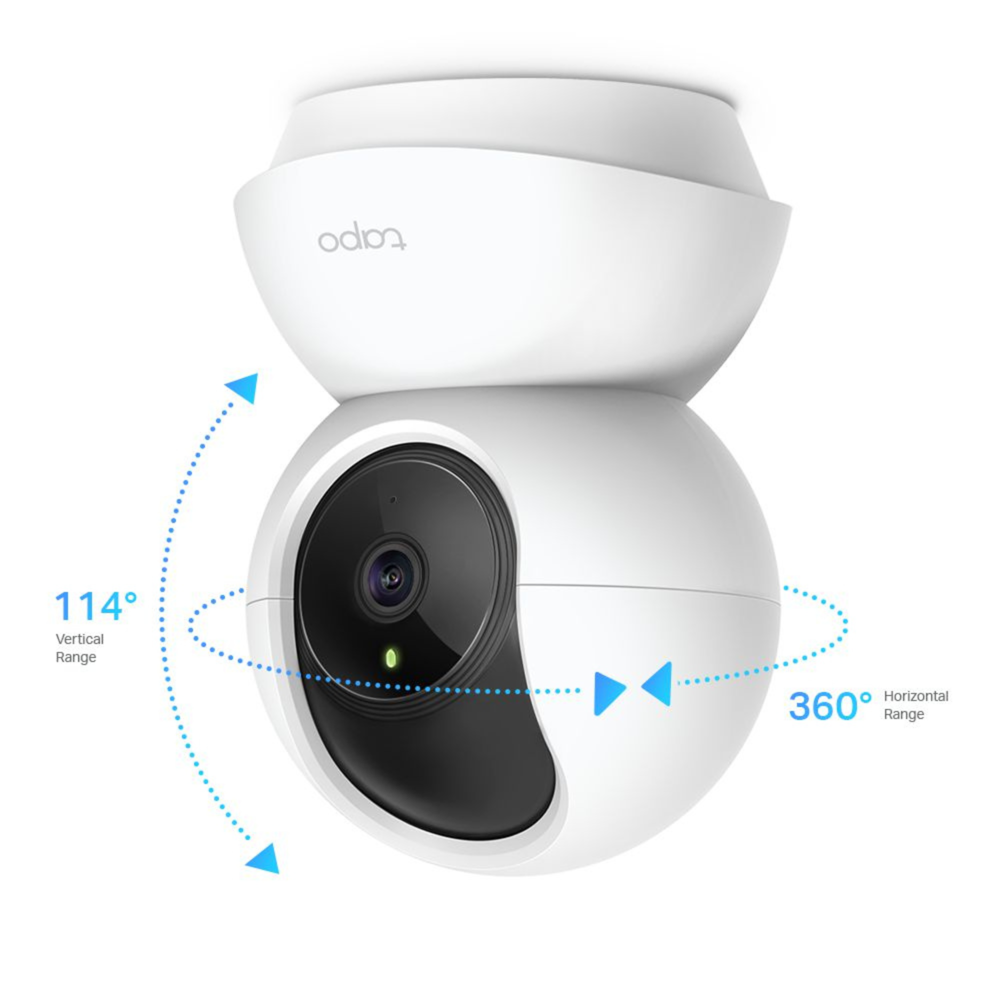
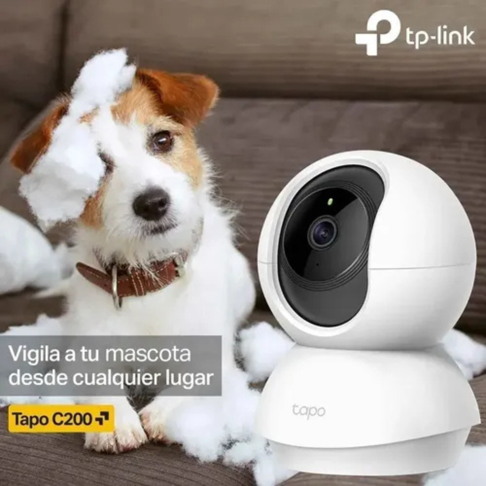
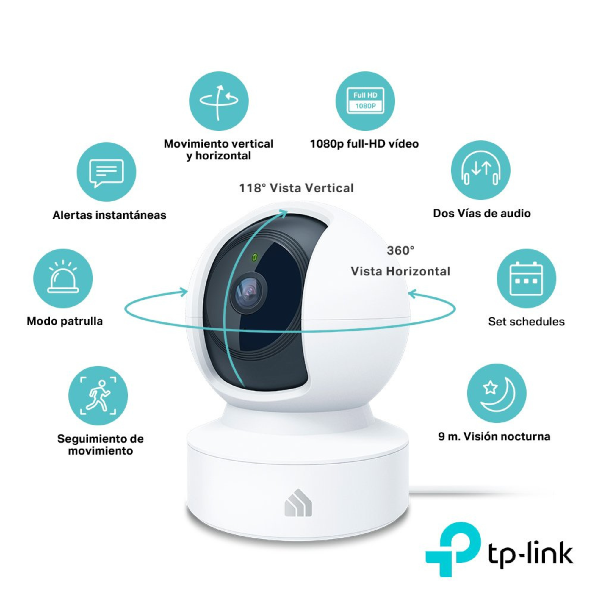
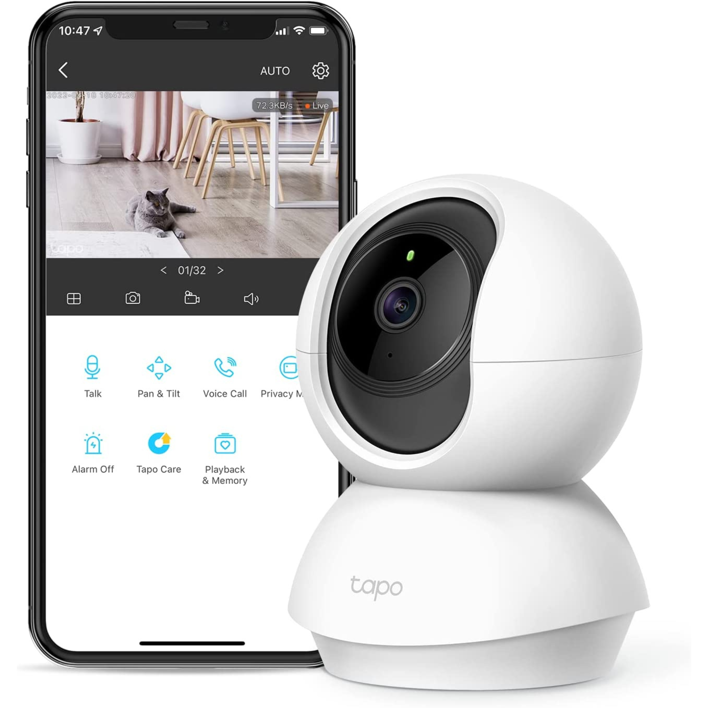

Cámaras Inalámbricas / WiFi
Cámaras de fácil instalación, sin cables de energía o datos, ideales para monitorear espacios donde no hay acceso a conexión física. Funcionan mediante baterías recargables y conexión a red WiFi.





Tapo C410 - Cámara 2K Inalámbrica
Cámara de seguridad exterior con resolución 2K QHD, visión nocturna a color y batería de larga duración de hasta 180 días con una sola carga. Cuenta con resistencia al agua y polvo IP65, detección inteligente de personas y audio bidireccional para comunicarte desde cualquier lugar. No requiere instalación compleja, solo conexión a tu red WiFi.
Califica este producto:





Tapo C200 - Cámara WiFi Interior
Cámara de seguridad giratoria 360°, resolución 1080p Full HD, visión nocturna infrarroja, detección de movimiento, audio bidireccional y grabación en tarjeta MicroSD. Ideal para monitorear interiores, niños o mascotas desde tu celular en cualquier momento.
Califica este producto:
Cámaras Analógicas
Tecnología tradicional y confiable, ideal para sistemas de seguridad económicos y estables. Ofrecen buena calidad de imagen y compatibilidad con la mayoría de los grabadores DVR del mercado.
Próximamente más modelos disponibles
Cámaras IP
Alta definición digital, acceso remoto desde cualquier dispositivo, funciones inteligentes y escalabilidad. Son la mejor opción para sistemas modernos que requieren máxima calidad y características avanzadas.
Próximamente más modelos disponibles